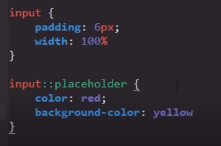

Los pseudo-elementos Son clases creadas en base a elementos comunes, por lo que no es posible (por medios normales) crear un pseudo-elemento sin uno, estos se distinguen de los elementos comunes ya que algunos requieren del uso de la etiqueta content, estos elementos, no forman parte del DOM, sin enbargo si generan cambios visuales en la paguina web, por lo tanto su empleación no fectara al DOM, por otra parte tambien existen otros pseudo-elementos que si forman parte de DOM como ::first-line y ::first-letter, los cuales no requieren de uso de la etiqueta content.
Nota: los doble dospuntos (::) ubicados antes del nombre de la propiedad forman parte de la sintaxis de los pseudo-elementos.
Los tipos de pseudo-elementos son:
::first-line
-
La función de este es aplicar un estilo a la primera linea de un texto, puede sonar muy simple, sin embargo lo que verdaderamente ofrese este es aplicar el estilo adaptandose al elemento, o a la parte de este que cumpla con dicha caracteristica, todo esto segun las dimenciones de la pantalla, el tipo de dispositivo etc,
De este modo podemos definir que unicamten la porción del texto que se visualiza en esta linea posea un estilo en espesifico, sin recurrir a scrpts de JavaScrip
Ejemplo
Codigo:

Resultado
Este codigo resulta en que unicamente a la porción de texto ubicada en la primera linea se le aplicaran los estilos definidos, esto sin importar desde que dispositivo o pantalla se muestren ya que estos se ajustaran para cubrir una mayor o menor porción del texto.
Una partucularidad de esta propiedad es que no funciona el los elementos inline, sin embargo si lo hace en caulquiera de los otros tipos de elementos.
::First-letter
-
Se trata de un pseudo-elemento muy similar a first-line, diferenciandose a que su efecto se limita unicamente a la primera letra del texto en cuestión.
Ejemplo
Codigo:

Resultado:
Nota: first-letter tampoco se puede aplicar a los elementos inline
::Placeholder
-
Este pseudo-elemento cumple con la función de asignar estilos para el texto almacenado en el atributo placeholder de un elemento Input de tipo Text, en si esta es la unica función de este pseudo-elemento.
Ejmplo
Nota: El atributo placeholder Es en el que se define eltexto por defecto que se muestra en un input, y desaparece al usuario escribe en este.
Ejemplo
::selection
-
La función de esta peseudoclase es la de aplicar los estilos a todo aquel texto que sea seleccionado por el usuario, los estilos por defecto de los navegadores son un background azul y letras blancas, pero con este pseudo-elemento es posible aplicar las caracteriticas que se desee a la selección de texto realizada por el usuario.
Una de las caracteriticas de esta propiedad es que unicamente puede conportarse como un elemento de linea, por lo que unicamente ecepta propiedades de estos.
Ejmplo
Estilos por defecto

Codigo:

Resultado:

::besore y ::after/h3>
-
Estos dos pseudo-elementos cumplen con funciones muy cimilares, su efecto es el de mostrar un texto al rededor de un texto HtML, y para hacerlo realmente crean un elemento hijo, es decir:
::before: Esta propiedad muestra un texto antes del texto almacenado en el elemento en cuestión
::after: Esta propiedad muestra un texto despues del texto almacenado en el elemento en cuestión
Por lo tanto estos textos creados con pseudo-elementos no forman parte del DOM, de hecho para su funcionamiento dependen de la propiedad content, en la cual se almacena el texto que sera mostrado en el elemento hijo, al tratarse de pseudo-elementos CSS logicamente estas propiedades pueden almacenar cualquier propiedad de un elemento lineal.
Nota: Una caracteritica de estos pseudo-elementos es que funcionan tanto en elementos de linea como elementos de bloque.
Ejemplo
HTML
Codigo:
Resultado: